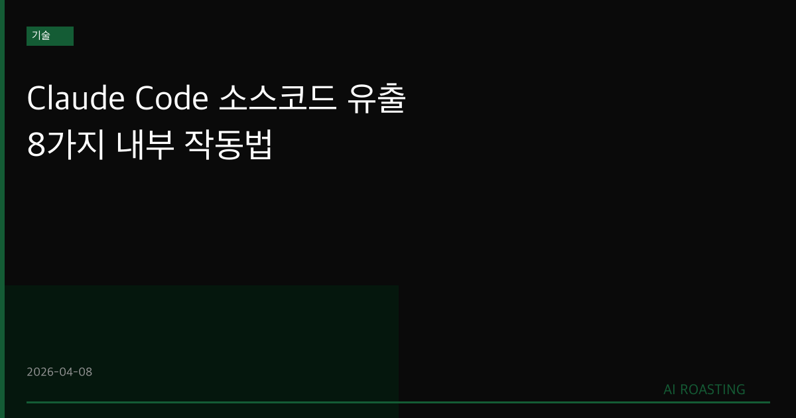

Claude Code 시스템 프롬프트 유출로 8가지 핵심 설계 원칙이 공개됐습니다.
병렬 실행, CLAUDE.md 메모리, Bash 우선 사용 등 숨겨진 동작 방식이 드러났습니다.
설계 의도를 이해하면 지시 방식만 바꿔도 Claude Code 활용도가 높아집니다.
도구를 만든 사람의 설계 의도를 알면 더 잘 쓸 수 있습니다. CLAUDE.md 하나가 팀 전체의 AI 활용 수준을 바꿉니다.
개발팀에서 Claude Code를 쓰는 회사가 빠르게 늘고 있습니다. 코드 작성, 버그 수정, 리팩터링까지 AI가 처리합니다. 그런데 어떤 지시는 잘 통하고 어떤 지시는 왜 안 되는지 알기 어렵습니다. 2026년 4월, Claude Code의 완전한 시스템 프롬프트와 에이전트 루프 구현이 유출됐습니다(MindStudio, 2026). 8가지 설계 원칙이 드러났습니다. 도구를 만든 사람의 의도를 알면 더 잘 쓸 수 있습니다.
AI 코딩 도구의 활용 격차가 커지고 있습니다. 같은 도구를 쓰더라도 사용 방식에 따라 생산성 차이가 크게 납니다. 이번 유출은 모델 가중치나 핵심 인프라가 아닙니다. 시스템 프롬프트, 툴 정의, 에이전트 루프 설계입니다(MindStudio, 2026). 우회나 악용이 목적이 아니라, 설계 철학을 이해해 올바르게 활용하는 것이 핵심입니다.
| 설계 원칙 | 실무 적용 포인트 |
|---|---|
| ① 병렬 도구 실행 | 독립 작업은 "동시에"라고 명시하면 병렬로 실행됩니다 |
| ② CLAUDE.md 메모리 | 프로젝트 관례와 규칙을 저장하면 세션마다 유지됩니다 |
| ③ 불필요한 사과 제거 | 짧고 명확한 지시가 더 직접적인 답변을 이끌어냅니다 |
| ④ Bash 우선 도구 | grep, git, sed가 개별 파일 읽기보다 효율적입니다 |
| ⑤ 차이 기반 파일 편집 | 파일을 먼저 읽은 후 수정하면 정확도가 높아집니다 |
| ⑥ 에이전트 루프 종료 조건 | 결과로 작업을 정의해야 무한 루프를 방지합니다 |
| ⑦ Git 안전 설계 | 기본값으로 파괴적 명령을 피하도록 설계됐습니다 |
| ⑧ 확장 사고 트리거 | "트레이드오프 검토" 프레이밍이 심층 추론을 활성화합니다 |
출처: MindStudio (2026), Claude Code 시스템 프롬프트 유출 분석.
첫째, 병렬 실행은 명시해야 작동합니다. Claude Code의 시스템 프롬프트는 독립적인 작업을 묶어 처리하도록 설계됐습니다. "파일 A를 읽은 다음 B를 읽어줘"가 아니라 "파일 A와 B를 동시에 읽어줘"라고 해야 합니다(MindStudio, 2026). 독립성을 명시하지 않으면 순서대로 처리합니다.
둘째, CLAUDE.md는 팀 전체의 기억 장치입니다. 세션이 끊겨도 프로젝트 관례가 유지됩니다. 기술 버전, 금지 수정 항목, 선호 라이브러리, 배포 명령을 여기에 씁니다(MindStudio, 2026). 팀원이 바뀌어도 Claude Code는 동일한 규칙으로 동작합니다.
셋째, Bash가 가장 강력한 도구입니다. 개별 파일 읽기·쓰기 도구보다 Bash 명령이 더 넓은 작업 범위를 커버합니다. grep으로 검색하고, git으로 이력을 추적하고, sed로 치환하는 것이 효율적입니다(MindStudio, 2026).
넷째, 종료 조건을 명확히 정의해야 합니다. 에이전트 루프는 작업 완료, 복구 불가 도구 오류, 턴 제한 세 가지 신호로 종료됩니다(MindStudio, 2026). "에러를 찾을 때까지 계속 확인해줘"처럼 과정으로 정의하면 루프가 끊이지 않습니다.
다섯째, 확장 사고는 프레이밍으로 유도합니다. 단순 실행 요청은 빠른 처리 경로를 탑니다. 복잡한 작업에는 "트레이드오프를 먼저 검토해줘", "변경하기 전에 분석해줘"라는 문구가 심층 추론을 활성화합니다(MindStudio, 2026).
기술 스택 버전, 금지 수정 파일 목록, 코딩 컨벤션, 배포 명령을 적습니다. Claude에 "우리 프로젝트 README를 보고 CLAUDE.md 초안을 작성해줘"라고 요청합니다. 팀 공유 저장소에 커밋해 모든 팀원이 동일한 AI 규칙으로 작업하게 합니다. (30분, CLAUDE.md 초안 작성)
파일 여러 개 읽기, 독립적인 테스트 실행, 코드 검색처럼 순서가 없는 작업에 적용합니다. 기존 지시 방식과 병렬 지시 방식을 비교해 응답 속도와 품질 차이를 확인합니다. (15분, 지시 방식 실험)
"바로 수정해줘" 대신 "변경 전에 영향 범위를 먼저 분석해줘"로 시작합니다. 아키텍처 결정이나 대규모 리팩터링 전에 "트레이드오프를 정리해줘"를 앞에 붙입니다. (매 복잡한 작업마다 적용)
유출된 내용은 특정 버전 기준입니다. Anthropic이 시스템 프롬프트를 업데이트하면 동작이 달라집니다. 지금 확인된 원칙이 이후 버전에서 동일하게 적용된다고 보장할 수 없습니다.
이해와 우회는 다릅니다. 설계 의도를 파악하는 것은 도구를 더 잘 쓰기 위함입니다. 안전 가이드라인을 우회하거나 보호 장치를 끄는 것은 별개 문제입니다.
Bash 명령 권한을 팀 정책으로 관리해야 합니다. Claude Code가 Bash를 적극 활용한다는 것은 파일 시스템과 git 히스토리에 대한 접근 범위가 넓다는 의미입니다. 민감한 파일이나 운영 환경 접근에 대한 팀 내 정책이 필요합니다.
CLAUDE.md 내용이 공개될 수 있습니다. 저장소에 커밋되는 파일입니다. 내부 인프라 정보, API 키, 보안 설정을 적으면 안 됩니다.
Claude Code의 설계 의도를 알면 지시 방식이 바뀝니다. CLAUDE.md부터 시작하는 것이 가장 빠른 첫 걸음입니다.
시스템 프롬프트(System Prompt): AI가 대화를 시작하기 전에 받는 지시 사항입니다. 동작 방식, 제약, 우선순위를 정의합니다.
에이전트 루프(Agentic Loop): AI가 도구를 사용하며 작업을 반복 수행하는 실행 구조입니다. 목표 달성 또는 종료 조건 충족 시 멈춥니다.
CLAUDE.md: Claude Code가 프로젝트 시작 시 자동으로 읽는 설정 파일입니다. 프로젝트 관례와 지시 사항을 세션 간 유지합니다.
병렬 도구 실행(Parallel Tool Calls): AI가 독립적인 작업을 동시에 처리하는 방식입니다.
확장 사고(Extended Thinking): AI가 답하기 전에 더 깊이 분석하는 처리 모드입니다.
차이 기반 편집(Diff-Based Editing): 파일 전체를 재작성하는 대신 변경 부분만 교체하는 방식입니다.
- MindStudio Team. (2026, 4월). Claude Code Source Code Leak: 8 Hidden Features You Can Use Right Now [Blog post]. MindStudio. https://www.mindstudio.ai/blog/claude-code-source-code-leak-8-hidden-features